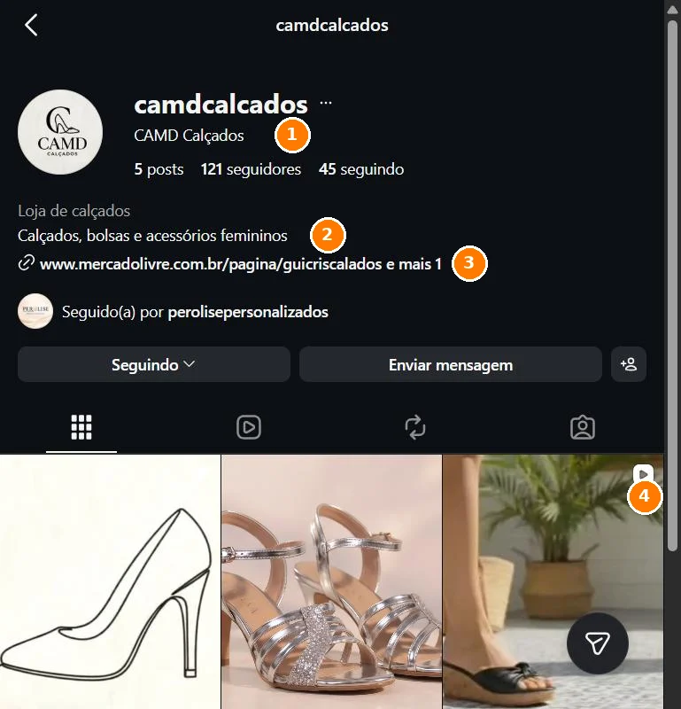
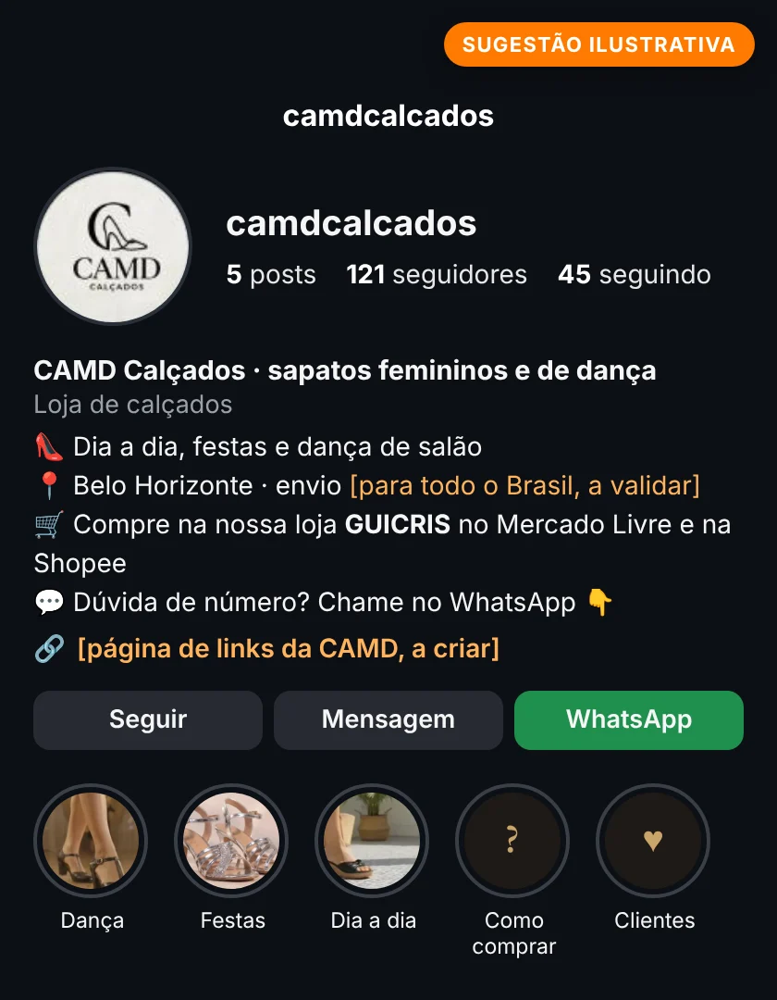
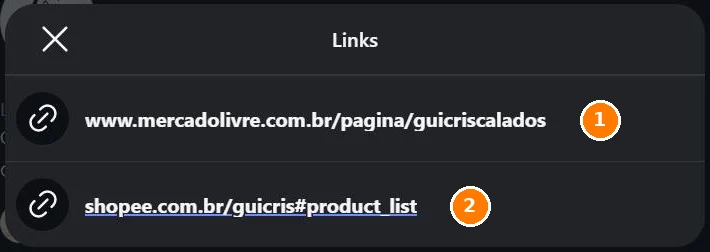
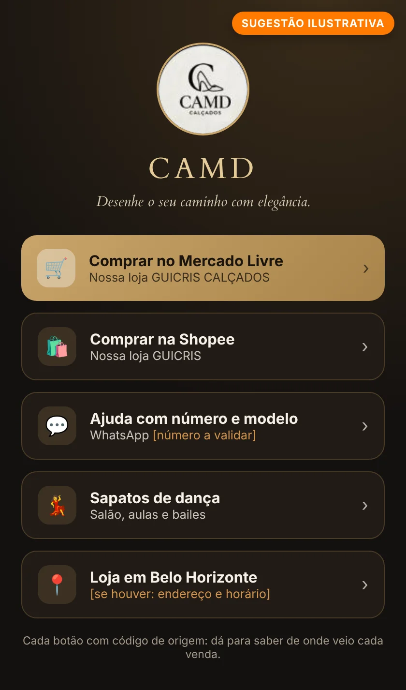
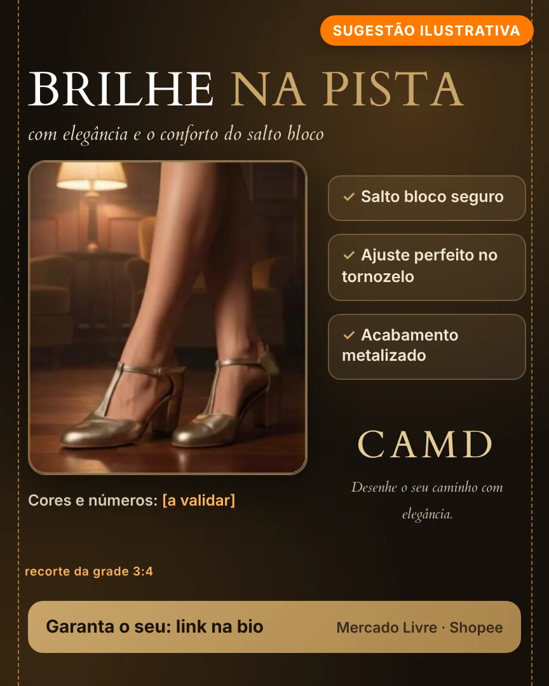
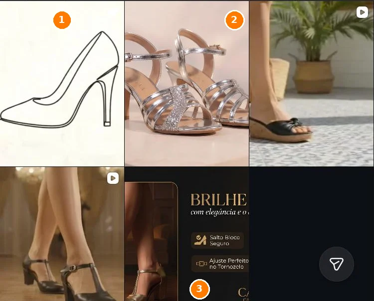
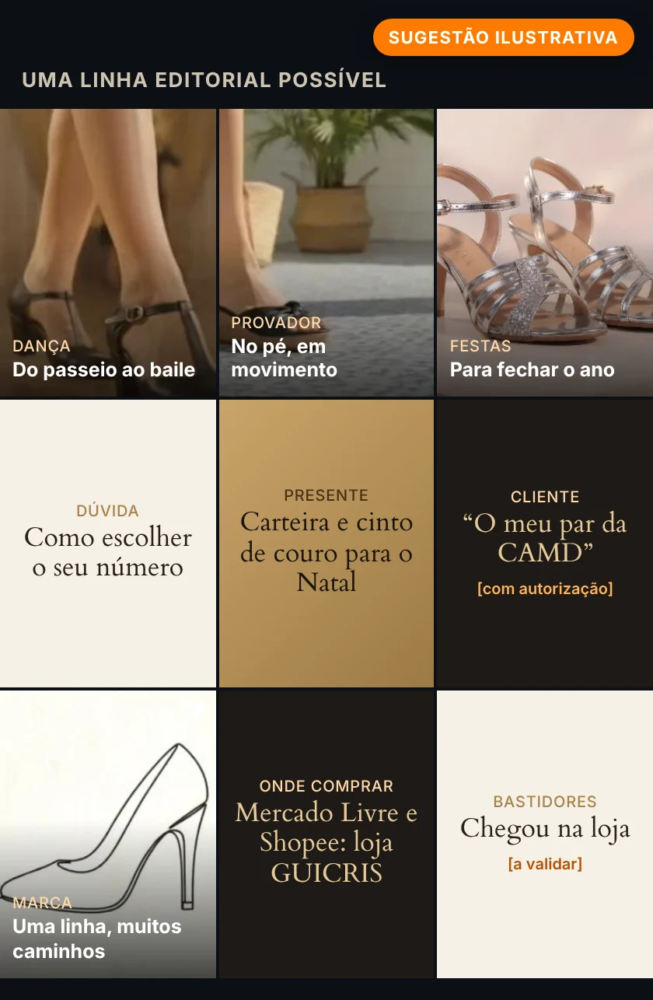
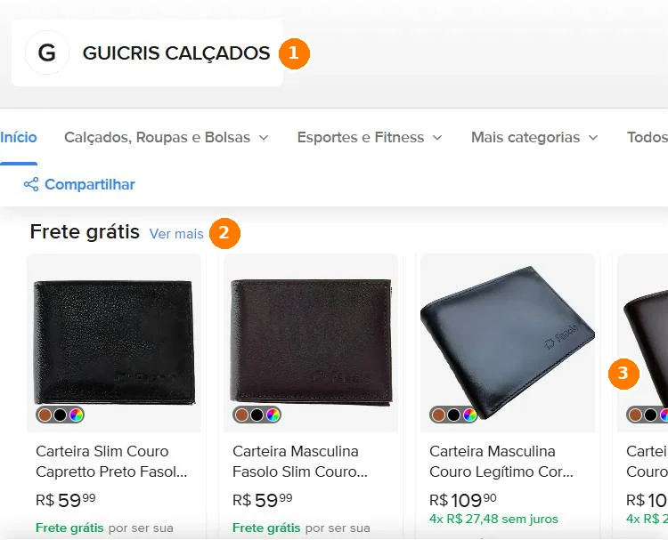
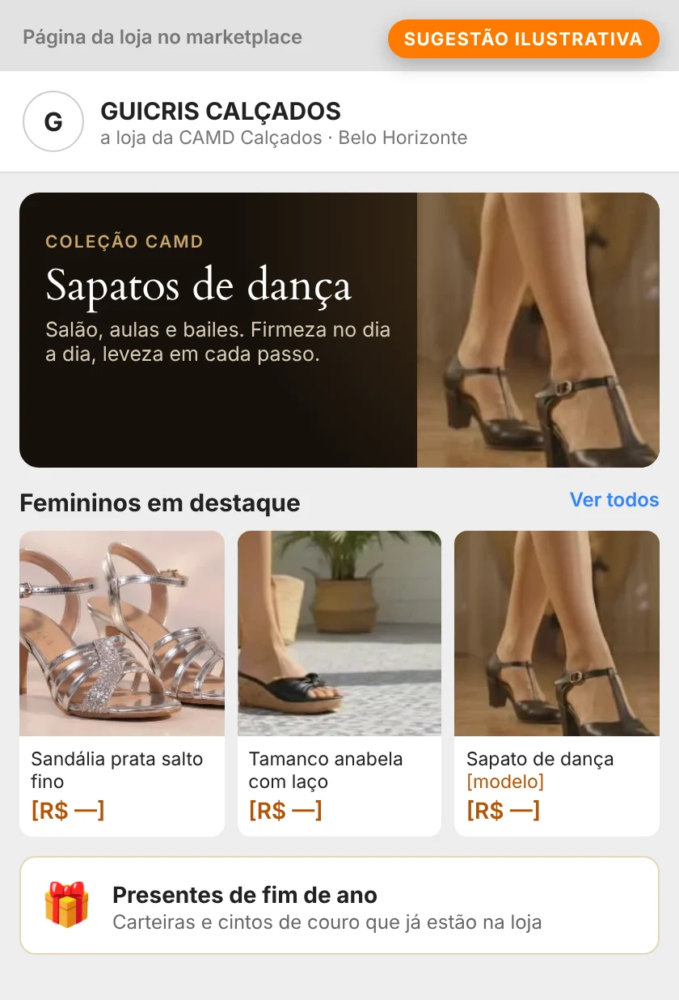

Leitura pública inicial
Olhamos, só por fora, o que a CAMD mostra hoje no Instagram e nas lojas GUICRIS do Mercado Livre e da Shopee, indicadas na própria bio. Esta leitura reconhece o que já funciona e aponta possibilidades de evolução, para considerar conforme os objetivos de vocês.
Usamos o caminho do Método VOS: Ver com clareza, Ordenar o que existe e Sustentar com constância. Este é o recorte da CAMD. Em cada etapa, mostramos o que já funciona e uma possibilidade de evolução.
Logo de uma linha só, a frase "Desenhe o seu caminho com elegância" e um visual escuro e dourado, apresentados em 11/10/2026. Possibilidade: dizer na bio a cidade, o sapato de dança e que as lojas GUICRIS são da CAMD.
Mercado Livre e Shopee no link da bio. No Mercado Livre, frete grátis na primeira compra, parcelamento sem juros e 5% no Pix em vários itens. Possibilidade: uma página de links com um botão por canal e um WhatsApp para dúvidas de número.
Cinco posts em outubro, com dança, dia a dia e festas, todos com convite para comprar. Possibilidade: um calendário simples, com o fim de ano e os bailes como datas-âncora.
Se um caminho já traz conversão, ele não precisa mudar. A CAMD já tem marca, vitrine e condições de compra claras. Se as vendas de hoje chegam bem pelos marketplaces, isso é uma base. O que segue são possibilidades, para usar quando fizerem sentido para os objetivos de vocês.
No Instagram, a marca é a CAMD Calçados, com foco feminino. Nos marketplaces, a loja se chama GUICRIS CALÇADOS, e a vitrine do Mercado Livre abre com carteiras e cintos masculinos, pastas e tênis, além dos sapatos de dança. Se esse arranjo já vende bem, ele segue. Se o objetivo for que quem vê o post encontre o produto sem dúvida, a resposta a esta pergunta muda o que a bio, o link e as vitrines dizem primeiro. Por isso, três cenários para conversar.
Cada nome com seu papel, explicado em uma linha.
Quem conhece a marca no Instagram a reconhece na loja.
Feminino e dança de um lado, acessórios e presentes do outro.
Leitura qualitativa, baseada apenas no que é público. O Raio-X completo mede isso com dados internos e entrevista. Ainda não conversamos, então esta é uma leitura de fora: só vocês sabem o que já traz resultado.
Antes de mudar qualquer coisa, vale proteger o que já gera confiança.
Um reel apresenta a nova identidade: "uma única linha cria infinitas possibilidades de estilo". Logo, frase e paleta se repetem nas artes, o que deixa a marca fácil de reconhecer desde o primeiro post.
Frete grátis na primeira compra, parcelamento sem juros e 5% de desconto no Pix em vários itens do Mercado Livre. O cliente compra sozinho, a qualquer hora, sem depender de atendimento.
Sapato de dança de salão em couro legítimo, sandália de dança e o post "do passeio à aula de dança". É um público com necessidades próprias (firmeza, salto, ajuste), e a CAMD já fala a língua dele.
Cores disponíveis, pergunta para os comentários, benefício explicado e convite claro ("peça a sua pelo link na bio"). É o roteiro de uma boa vendedora, por escrito.
Fasolo, Kolosh e Denlex aparecem na loja do Mercado Livre. Marcas que o cliente já reconhece ajudam a decidir a compra.
Os posts com imagem gerada por IA trazem o selo "Conteúdo de IA" do Instagram, o que deixa claro para o cliente como a imagem foi feita.
À esquerda, como está hoje (print real). À direita, uma possibilidade ilustrativa na própria identidade da CAMD, montada com fotos dos posts de vocês. É um exemplo de direção, não a arte final, e depende dos objetivos de vocês.
Nome, categoria, uma linha sobre o que vendem e o link da loja. Quem chega entende que a CAMD vende calçados, bolsas e acessórios femininos.


Ao tocar em "e mais 1", aparecem a loja do Mercado Livre e a da Shopee. É um caminho curto, que já funciona para quem sabe o que quer.


O post "Brilhe na pista" de 11/10/2026 tem título, benefícios do produto, a logo e um convite claro. É uma peça bem acabada.

Em cinco posts, a CAMD já mostrou a marca, um sapato de dança, um tamanco para o dia a dia, uma sandália de festa e um salto bloco. São temas que podem se repetir com ritmo.


A página da loja GUICRIS CALÇADOS tem mais de 360 seguidores, categorias organizadas e seções de frete grátis e parcelamento sem juros.


Consultamos o Instagram, os links da bio, a loja do Mercado Livre e buscas públicas. Registramos também o que não encontramos, porque ausência de prova também é informação, e pode apenas indicar que o conteúdo existe e não foi alcançado.
| Item | O que encontramos | Fonte | Leitura |
|---|---|---|---|
| @camdcalcados, "CAMD Calçados", categoria Loja de calçados, com 5 posts, 121 seguidores e 45 seguindo. Bio: "Calçados, bolsas e acessórios femininos". | Instagram (20/11/2026) | Ponto forte | |
| Identidade | Reel de apresentação da nova identidade em 11/10/2026, com a frase "Desenhe o seu caminho com elegância". | Ponto forte | |
| Posts | Cinco posts entre 11 e 29/10/2026: identidade, salto bloco, sapato de dança, tamanco e sandália de festa. Três trazem o selo "Conteúdo de IA"; um é marcado em Belo Horizonte. Amostra pequena, de um perfil recém-lançado. | Instagram (20/11/2026) | Possibilidade |
| Links da bio | Loja guicriscalados no Mercado Livre e loja guicris na Shopee. | Instagram (20/11/2026) | Ponto forte |
| Mercado Livre | Loja GUICRIS CALÇADOS, com mais de 360 seguidores. Vitrine com carteiras e cintos Fasolo, pastas Denlex, tênis Kolosh, sapato e sandália de dança. Frete grátis na primeira compra, parcelamento sem juros e 5% no Pix em vários itens. | Página da loja (20/11/2026) | Ponto forte |
| Reputação no Mercado Livre | A página do anúncio pediu login, então não vimos o termômetro de reputação nem as avaliações. | Mercado Livre (20/11/2026) | Conferir |
| Shopee | A loja pediu login para abrir. Não vimos produtos, avaliações nem nota. | Shopee (20/11/2026) | Conferir |
| Nomes | CAMD no Instagram e GUICRIS nos dois marketplaces. A própria bio liga um ao outro. | Instagram e lojas | Possibilidade |
| Site e Google | Não localizamos site próprio nem ficha da empresa no Google nas buscas por "Guicris calçados" e "CAMD Calçados". | Buscas públicas (20/11/2026) | Não localizado |
| Loja física | Não aparece endereço nos canais consultados. | Instagram e lojas | Conferir |
| Reclame Aqui | Não localizamos página própria nas buscas feitas. | Buscas públicas | Não localizado |
No celular, deslize a tabela para o lado.
Se os caminhos de hoje já trazem conversão, eles seguem. Se o objetivo for ampliar com anúncios, no Instagram ou dentro dos próprios marketplaces, estas três camadas ajudam cada real investido a render.
Um exemplo de sequência, a ajustar depois de conversarmos sobre os objetivos de vocês. O que já funciona entra como base e é preservado.
Esta leitura é um recorte do que o Raio-X mostra por dentro. Se fizer sentido, a gente conversa sobre os objetivos de vocês e sobre o que vale, ou não, mudar.
Quero conversar pelo WhatsApp Sem compromisso · resposta pelo WhatsApp